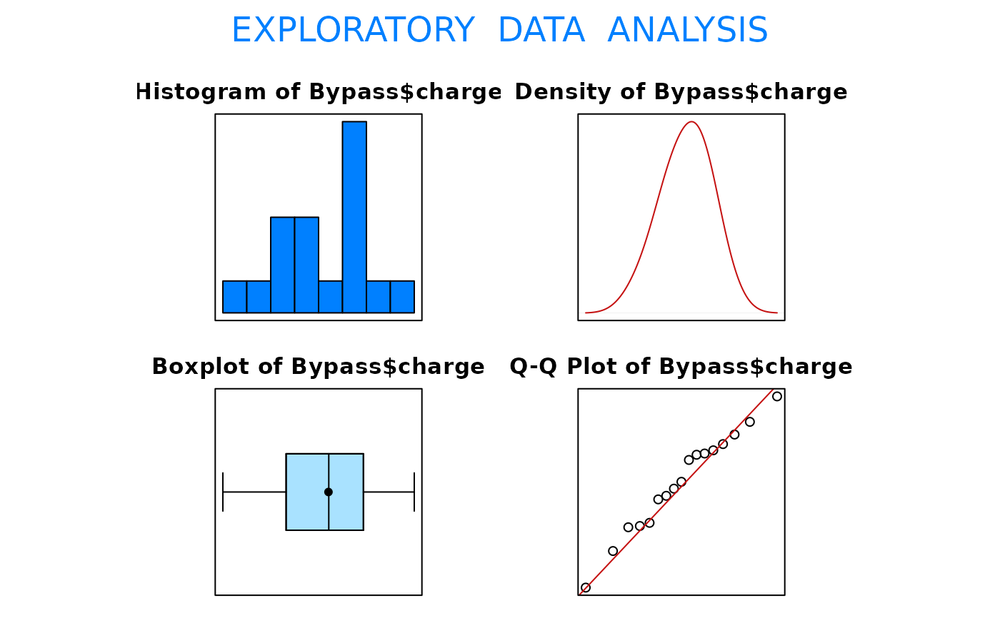

R/BSDA-package.R
Bypass.RdData for Exercises 5.104 and 6.43
BypassA data frame/tibble with 17 observations on two variables
a factor with levels Carolinas Med
Ct, Duke Med Ct, Durham Regional, Forsyth Memorial,
Frye Regional, High Point Regional, Memorial Mission,
Mercy, Moore Regional, Moses Cone Memorial, NC
Baptist, New Hanover Regional, Pitt Co. Memorial,
Presbyterian, Rex, Univ of North Carolina, and Wake
County
median charge for coronary bypass
Consumer's Guide to Hospitalization Charges in North Carolina Hospitals (August 1994), North Carolina Medical Database Commission, Department of Insurance.
Kitchens, L. J. (2003) Basic Statistics and Data Analysis. Pacific Grove, CA: Brooks/Cole, a division of Thomson Learning.
EDA(Bypass$charge)
#> [1] "Bypass$charge"

#> Size (n) Missing Minimum 1st Qu Mean Median
#> 17.000 0.000 24810.000 29359.000 32406.294 32428.000
#> TrMean 3rd Qu Max. Stdev. Var. SE Mean
#> 32406.294 34919.500 38578.000 3590.560 12892118.346 870.839
#> I.Q.R. Range Kurtosis Skewness SW p-val
#> 5560.500 13768.000 -0.774 -0.311 0.936
t.test(Bypass$charge, conf.level=.90)$conf
#> [1] 30885.91 33926.68
#> attr(,"conf.level")
#> [1] 0.9
t.test(Bypass$charge, mu = 35000)
#>
#> One Sample t-test
#>
#> data: Bypass$charge
#> t = -2.9784, df = 16, p-value = 0.00887
#> alternative hypothesis: true mean is not equal to 35000
#> 95 percent confidence interval:
#> 30560.20 34252.39
#> sample estimates:
#> mean of x
#> 32406.29
#>